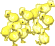

|
Lorsque tu casses un œuf : tu as vu que sa coquille est très solide et qu'elle contient à l'intérieur du blanc et du jaune. L'œuf est fabriqué par la poule qui a été fécondée par le coq. Au milieu du jaune d'œuf, il y a un germe. Ce germe se nourrit du blanc et du jaune de l'œuf pour grandir. La coquille protège le germe en train de se développer : elle empêche les microbes de rentrer dans l'œuf et d'attaquer le germe. Mais pour cela, la poule doit couver l'œuf pour le garder bien au chaud. Les œufs que l'on mange ont été ramassés aussitôt pondus : ainsi le germe n'a pas eu le temps de se développer. Si le fermier laisse la poule couver, un petit poussin viendra casser la coquille avec son bec 21 jours plus tard. Les petits poussins grandissent très vite. Dès qu'ils sont sortis de l'œuf, ils marchent tout seul et au bout de 5 semaines, se sont déjà de gros poulets ou des poulettes capables de pondre leur premiers œufs. Les poules pondent beaucoup plus l'été car il y a plus de lumière à l'extérieur. |
| Tu
peux vérifier si tu as bien compris cette fiche !
Clique ici pour jouer ! |
Tu
préfères découvrir une recette amusante ? Clique ici ! |